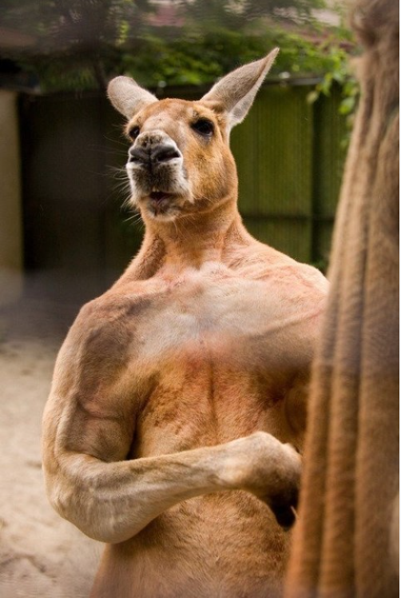

|  | 호주보디빌딩대회 1회 우승자 |
특별사항으로 수컷 캥거루는 성년이 되면 위의 이미지처럼 거의 근육질이 된다고 하는데 나이를 먹을수록 피하지방이 줄어들면서 근육의 윤곽이 선명해진다. 캥거루 중에는 나무 위에서 사는 나무캥거루(Tree Kangaroo, Dendrolagus)라는 종류도 있다. 일단은 태반류의 원숭이에 상응하고 생김새 또한 원숭이 내지는 여우원숭이와 비슷한데... 그래도 천성이 캥거루라 그런지 땅에서는 폴짝폴짝 뛰어댕긴다. 더욱 골때리는(?) 사실은 나무캥거루 중 뉴기니의 딩기소(Dingiso, Dendrolagus mbaiso)라는 종류는 나무캥거루면서 나무보다는 땅에서 더 많은 시간을 보낸다. 이걸 발견한 학자의 말에 따르면 꼭 판다의 유대류 버전 같다고...
그리고 2018년 2월, 캥거루 사냥꾼이 캥거루에게 당해 턱뼈가 부러지고 목숨을 잃을 뻔한 사고가 있었다.
실제로 캥거루가 앞다리를 단련한다기보다는 체중이 증가하면서 뒷다리만으로 버티기에 부담스러워지고 자연스럽게 앞다리에 체중을 실게 되어 저렇게 근육질이 되는것이다. 자세를 보면 네 발로 걸을 때 자세가 푸쉬업 자세랑 동일하다. 항시 푸쉬업을 하며 돌아다니는 셈이니 노령일수록 더더욱 근육이 많아지는 것. 뒷다리가 약해진 만큼 앞다리가 튼튼해지니 전체적으로 위험도는 더 올라간다.
최근에는 먹이부족으로 인해 어느 가정집에 자신의 새끼를 데리고 와서 앵벌이를 하는 어미 캥거루가 뉴스에 나와 화제가 되기도 했다.